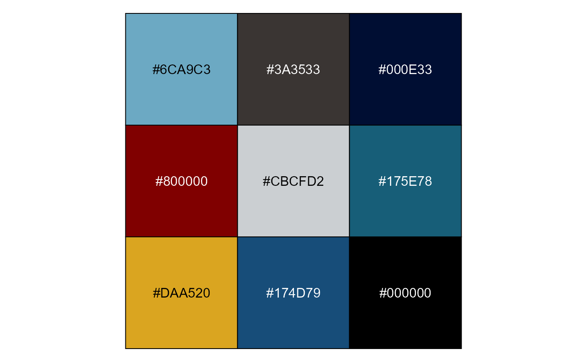
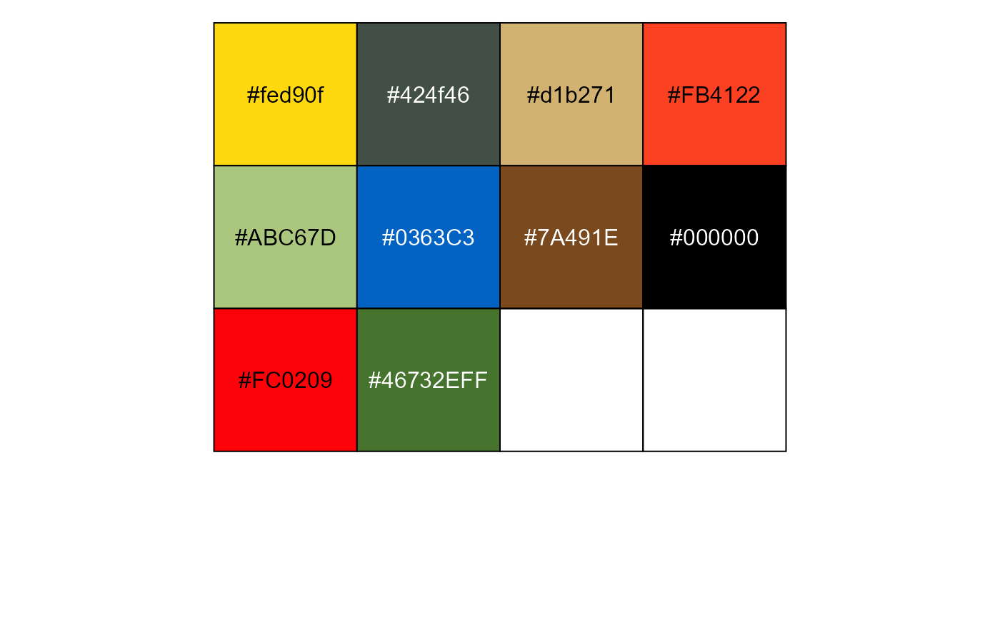

The difficulty with a lot of the fonts used by TV shows in their logos and other paraphernalia is that they are made by font foundries and therefore can be rather expensive (for a regular person like you or me) to purchase. So I endeavored to find FREE fonts to use that were somewhat similar to the real ones used by the shows from resources like Google Fonts. In the documentation you can find the actual fonts used by the TV shows if you are so inclined to buy them (some are just my best guesses though)! In some cases there were fan-made fonts such as “Some Time Later” for Spongebob or “Akbar” for The Simpsons that I included with the package.
Instead of dealing with extrafont yourself, I re-purposed the import_*() functions from the hrbrthemes package so you can import the included fonts very easily. Do note that you still might need to install the fonts directly on your computer from the .ttf files found in inst/fonts. When you’re done running the functions and installing the .ttf files on your computer, load the extrafont library and then run loadfonts(). If you’re having problems check out the documentation on extrafont’s Github repo or on CRAN.
The help files for each function tells you the recommended font names in case you forget! Besides the really custom stuff like for “The Simpsons”, “Rick & Morty”, and “SpongeBob”, font preferences are really up to you.
library(tvthemes)
import_simpsons() ## "Akbar" font
import_avatar() ## "Slayer" font (formerly `theme_theLastAirbender()`)
import_rickAndMorty() ## "Get Schwifty" font
import_robotoCondensed() ## "Roboto Condensed" Google Font import from hrbrthemes
import_titilliumWeb() ## "Titillium Web" Google Font import from hrbrthemes
import_spongeBob() ## "Some Time Later" font
import_cinzel() ## "Cinzel" font to use with 'The Palettes of Ice & Fire'
import_chelseaMarket() ## "Chelsea Market" font for "Hilda"
import_gravitationFalls() ## "Gravitation Falls" font for "Gravity Falls"
## install.packages("extrafont")
library(extrafont)
loadfonts() ## You need to do this at the beginning of a session.I gathered the colors/hex codes by looking at images online or re-watching some old episodes and then using various hex code websites and hex code extraction websites. The colors in some of these palettes may still change from feedback and further experimentation.
You can check out all the colors for each palette by running scales::show_col(tvthemes:::name_of_palette). Some examples below:

